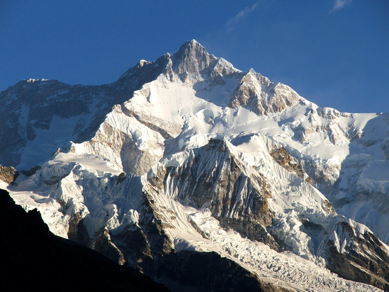
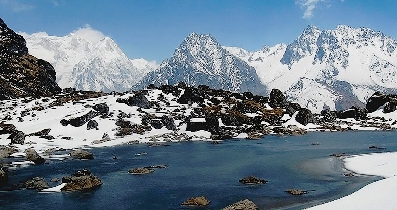
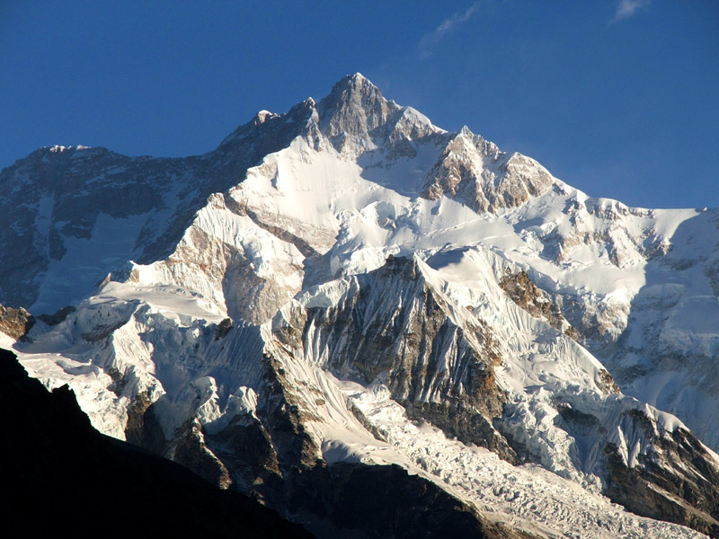
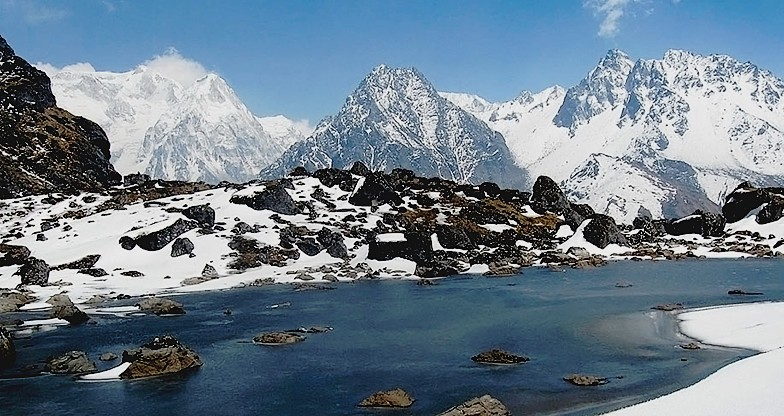

KANCHENJUNGA
A pristine trekking circuit which allows you to circleMt. Kanchenjunga, word's 3rd highest peak.
Kangchenjunga, also spelled Kanchenjunga, is the third highest mountain in the world. It lies between Nepal and Sikkim, India, with three of the five peaks (Main, Central and South) directly on the border,[3][4] and the remaining two (West and Kangbachen) in Nepal's Taplejung District.[5] It rises with an elevation of 8,586 m (28,169 ft) in a section of the Himalayas called Kangchenjunga Himal delimited in the west by the Tamur River, in the north by the Lhonak Chu and Jongsang La, and in the east by the Teesta River.
 Until 1852, Kangchenjunga was assumed to be the highest mountain in the world, but calculations based on various readings and measurements made by the Great Trigonometrical Survey of India in 1849 came to the conclusion that Mount Everest, known as Peak XV at the time, was the highest. Allowing for further verification of all calculations, it was officially announced in 1856 that Kangchenjunga is the third highest mountain in the world.
 Kangchenjunga was first climbed on 25 May 1955 by Joe Brown and George Band, who were part of a British expedition. They stopped short of the summit in accordance with the promise given to the Chogyal that the top of the mountain would remain intact. Every climber or climbing group that has reached the summit has followed this tradition.[7] Other members of this expedition included John Angelo Jackson and Tom Mackinon.
 Until 1852, Kangchenjunga was assumed to be the highest mountain in the world, but calculations based on various readings and measurements made by the Great Trigonometrical Survey of India in 1849 came to the conclusion that Mount Everest, known as Peak XV at the time, was the highest. Allowing for further verification of all calculations, it was officially announced in 1856 that Kangchenjunga is the third highest mountain in the world.
 Kangchenjunga was first climbed on 25 May 1955 by Joe Brown and George Band, who were part of a British expedition. They stopped short of the summit in accordance with the promise given to the Chogyal that the top of the mountain would remain intact. Every climber or climbing group that has reached the summit has followed this tradition.[7] Other members of this expedition included John Angelo Jackson and Tom Mackinon.